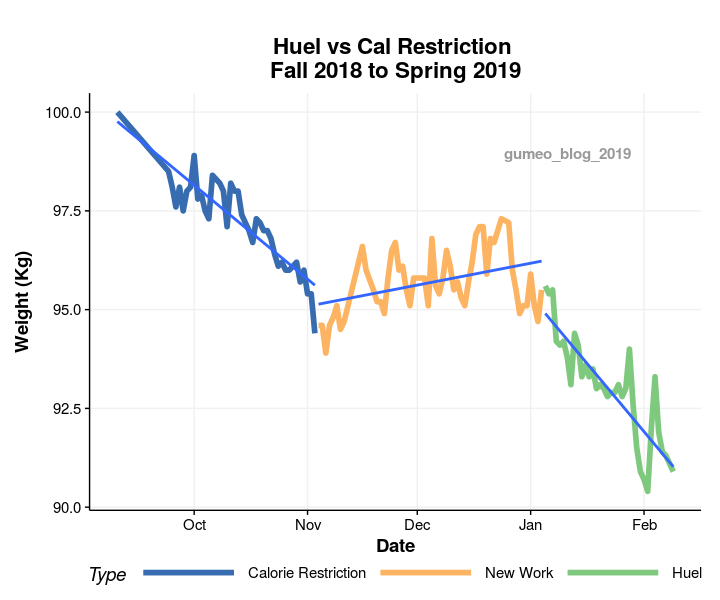

Eating Less vs Fad? Diets
I have to lose weight
The reasons I am going through some weightloss has some history behind it, so I’m going to briefly outline that.
Knee Injury
End of July 2017 I was extremely unlucky and had an accident in BJJ, where I fully ruptured the PCL, LCL and popliteus tendon (where it connects to the fibula) in my left knee. We have four ligaments in the knee, one on each lateral side, and then the front (ACL) and back (PCL) cross ligaments. The stability of the knee relates to the elasticity (and existence) of these ligaments, but also the muscles around the knee joint. So half of the ligaments and a muscle tendon were torn, ouch!
The PCL ligament is the worst to be gone of these. It prevents the lower leg to shift backwards. The doctors measure the difference in posterior shift, compared to the healthy knee. My lower leg was moving backwards 1cm more than the other leg. When I was sitting down and pressed on the front of my knee, I could feel immense difference in slack. The doctors started with a conservative treatment, but I ended up needing a surgery, which was performed in May 2018 ( Picture after surgery, pretty big scar).
Physio Training and Diet
The surgery fixed most of the difference in slack, but it takes a long time to recover from it. Now I’m almost a year post-surgery, and I have been in some pretty intense physio training to try to get the leg as strong as the healthy one. I still haven’t started running, but one of the reasons for that is that running has a high impact on the knee joint, which scales with weight. My physical therapist said that when you run, the impact on the knee is four times the bodyweight. Not sure about the exact numbers, but it is definitaly true that the impact scales with weight. So losing weight is a crucial part of the recovery process, such that I can hopefully get back to some of the sport activities I was doing prior to the accident.
In terms of BMI, I was overweight (BMI 29), when I had the accident. My fat percentage was around 15%, so I was in pretty good shape. Note that BMI was designed to measure malnutrition, and doesn’t take fat percentage into account, so quite a lot of athletes and people with more muscles will be measured as overweight, although they are in ok shape. After the surgery I had to use crutches and was not allowed to put weight on the leg for the first 12 weeks. I gained weight and at the end of the summer 2018, when I started walking, my BMI was 30.5. I was in the obese range, I had not been training anything intense for a year, so it was time to do something if I ever wanted to do sports again.
Calorie Restriction
I started with a sustainable solution, basically reducing the amount of calories I was consuming. I used Myfitnesspal, to track calories and my weight. Myfitnesspal has a built in barcode scanner, with a huge user-generated data-base behind it. So by scanning barcodes of the food packaging, it becomes fast and easy to track the amount you are eating, and macros. I almost never scanned something that had not been logged by a prior user. Myfitnesspal is definitely sitting on a goldmine of consumer data. The only problem this has is when you go eat out, then you cannot barcode scan things, and it becomes a bit more guesswork. I did the scanning for about a month, and that was enough to become aware of portion sizes for the most common things I was consuming.
Then, the 1st of November I started a new job, and I lost focus on the calorie counting. I felt the weight was slowly creeping back up, so around Christmas I decided that I should try Huel again. I had tried it for a week prior, but I decided that I wanted to commit to it for more than a month to see if it was doable.
Huel
Huel is a very inexpensive meal substitute and it gives you absolutely full control of how many calories you consume. They state that it is a full meal substitute, meaning that it contains all the essential vitamins, minerals and nutrition you need. It is also super convenient, because it is just powder that you mix with water, so the time preparing food is gone, and it takes faster to eat/drink.
So that were the pros of Huel. I’m always up for trying to do things in a more efficient way, but after trying this I’m not sure replacing this with every meal is a good idea. After the first day on huel, you miss chewing stuff. Chewing gum helped a bit, but it is still not a substitute. I read online and some people complained about stomach problems, I experienced it a bit, but not to an extent that concerned me. I’m also not sure if Huel contains all the essential vitamins. My nails became stiffer and more brittle, that did not happen when I was just restricting calories. There is also a lot less sodium in Huel compared to the other food I was eating, so I had a big weight drop in the beginning, because I was bloated from the salty food. I would not say I was hungry when on Huel, but I had to go to bed before 10, otherwise I became hungry and it was harder to fall alsleep.
Eating with other people also becomes a bit weird when you bring out your shaker. It was ok at work, but at home I sincerely missed eating dinner with my wife and son, and that complicated the experience a bit. I think I will never try Huel again as a replace every meal, but potentially as breakfast/lunch substitute.
The Data
But I made it, I tried Huel for more than a month, except was a couple of Saturday nights we went to a restaurant. Almost since I started the weightloss journey, I weight myself everyday. I always did it in the morning, when I woke up. I wanted to see the trend, and what kind of daily variation I could expect. When I tried to get the data from Myfitnesspal I was hit with a paywall! What? do I need to pay to export my data in csv format? But of course someone had created a python module to do this. It mas a matter of pip install myfitnesspal and I had the data in a breeze, doing something similar to
this. I made a simple visualisation to compare the three periods, calorie restriction, not paying attention to what I eat (New Work) and of course Huel. The following is a visualization demonstrating that.

What Did I learn?
There are higher residuals in the middle period when I am not paying attention to what I eat. I think this is because of the high variation in sodium content, i.e. if I eat fast-food, it is bound to have a lot of salt in it. The two large spikes in the Huel period are the same thing. The prior one is the morning after I went to an all you can eat sushi place, and the other spike is also after going to an asian cuisine restaurant with salty soy sauce.
Notice that the residuals are pretty big. You need to look at a trend of at least two weeks to see if things are working. Be patient and consistent, that is key. If you are trying something similar, then do not obsess over your daily numbers. Just measure the weight and look at it every two weeks to see if there is a trend.
Another thing I learned is that if I want to reach my weight goal of 82 kg, I cannot be lazy about what I eat, the middle period shows that. It might play into it that the middle period covers December, causing an abnormal increase in calorie consumption, (because of Christmas parties), but at least the trend is not going down, so I will have to focus to reach my goals, this is an effort.
Also, if I want to reach my goal and maintain it, I have to be consistent. I will continue to track my weight after I reach my goal to make sure I don’t slip again. Also, I do not see Huel as an option for consistency. I would maybe consider it for breakfast or lunch in between, but I would rather enjoy a cheewy dinner with my family. If you want to lose weight and stay healthy, it is a matter of choosing a healthier lifestyle, not investing in a fad.
The slope for using Huel is slightly more agressive than the calorie restriction, but in the long term, calorie restriction is a more sustainable option, so I will continue with that.
Appendix
I used theme_Publication for the plot from
here. This theme makes the plot look a bit cleaner compared to the default ggplot, imo.
Code for plot
library(ggplot2)
setwd("~/Documents/myfitnesspal_data")
source('./plot_funcs.R')
data <- read.csv2('./weight_data.csv', sep=" ",
stringsAsFactors = FALSE)
data <- data[data$Weight != 'None', ]
data$Weight <- as.numeric(data$Weight)
data$Date <- as.Date(data$Date)
data$Type <- factor(c(rep('Calorie Restriction',42),
rep('New Work',56),
rep('Huel',44)),
levels = c("Calorie Restriction",
"New Work", "Huel"))
#############################################################################
# Visualisation
#############################################################################
p <- ggplot(data, aes(x = Date, y=Weight, group = Type)) +
geom_line(aes(group = Type, col=Type))+
geom_smooth(aes(group = Type), method = "lm", se = FALSE) +
labs(title = "Huel vs Cal Restriction \nFall 2018 to Spring 2019",
x="Date", y="Weight (Kg)") +
scale_colour_Publication()+ theme_Publication() +
theme(legend.key.width = unit(3,"cm"))
Guðmundur Einarsson
Research Scientist
I am interested in statistics, genetics and machine learning.